3D prints · No. 03
A life-size bat on a 30 cm printer
An 84 cm baseball bat in red PETG, printed upright on a steel rod. Eight prints started, five of them stopped, and the barrel ended up in three pieces.
- PETG
- 22 h 20 min printing
- about 680 g
- 8 prints started
- 84 cm
A real adult bat is 84 cm long. My printer's box is 30 cm on every side.
I wanted it life size and realistic, so it had to come out of that box in pieces and still hold together when swung.
Desk toys
The first job was to find a bat someone else had already got right. I didn't find one. The popular printable bats were desk toys: scale one up to 84 cm and its barrel comes out 84 mm thick, because its proportions are a cartoon's. Another was low-poly, another a stack of cones. The closest was MIHAI_T's full-size bat on MakerWorld: 85 cm, with an M8 threaded rod through the middle. I liked that rod, and it ended up in mine. But the bat never said what profile it used, and its licence is personal use only.
So I drew my own: a standard 33 inch bat, the classic shape, revolved in CadQuery, a Python library for CAD, from a table of diameters along its length. A name went across the barrel in raised graffiti letters with a drop shadow, every edge sloped at 45° so nothing needs support.
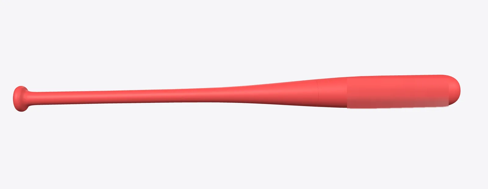
Three pieces and a rod
The first plan was three upright pieces in PLA on a steel rod. But I wanted the bat tough on its own, without the rod, and PETG takes a hit better than PLA. A bat printed lying down is strongest, with every layer running along its length. Lying diagonally on a 30 cm bed, though, two pieces top out at 73.5 cm.
Standing up, two pieces are limited by the printer's height, so I tried upright pieces and let the size give. The tallest bat that fits in two upright pieces is 57.8 cm. That's a tee-ball bat for a kid. No: three pieces, full size, the best result.
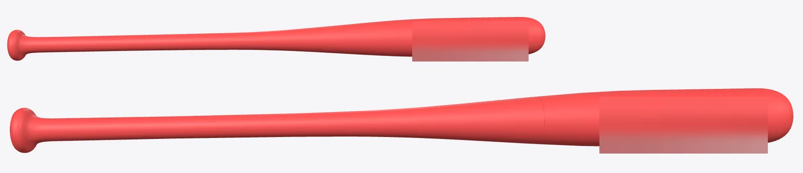
So three upright pieces at full size. From the bottom up: the knob and handle, then the taper, where the handle swells into the barrel, with a short spigot at its lower end that plugs into the handle, then the barrel with its cupped end. They join where the bat bends least, 286 mm up from the knob, as far as the printer's height allows, and again at 558 mm, just before the barrel, where the bending is almost nothing.
But an upright print is weakest across its layers, and a bat bends across its layers every time it hits something. The plan for the first joint was a printed spine, an eight-sided bar printed lying down and glued into both pieces. The calculation gave that joint about half to nine tenths of a solid handle's strength, calculated and never measured. That was enough for a bat on a shelf, and short of the one I wanted.
So the rod came back: an M8 threaded rod from a hardware shop, 13 dirhams, running through all three pieces. One steel nut sits in a printed nut holder inside the knob and another under the cup at the far end, so tightening them clamps the pieces end to end and every joint is squeezed instead of pulled. A short printed plug, the coupler, joins the taper to the barrel. Epoxy holds the nut holder and a cap over the knob, and a press-fit cup plug closes the far end.
Later the same day I had another idea: make the barrel itself the wrench, so the bat tightens when you spin it. A few minutes later I took it back. A bat that tightens by spinning loosens by spinning, every time it hits something. Both joints are keyed now, shaped so one piece can't turn against the next.
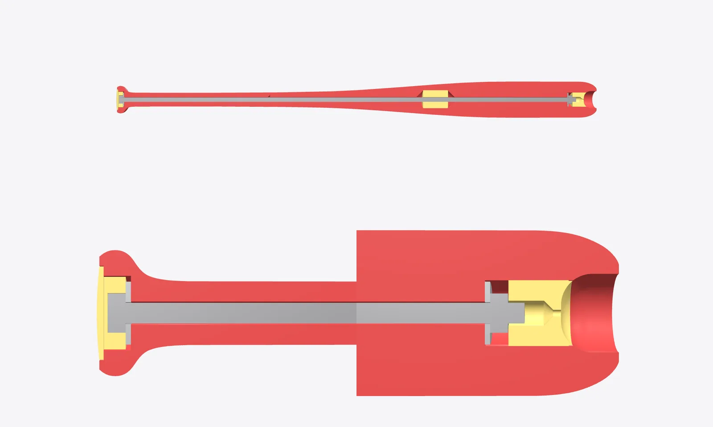
The washers I had at home were 30 mm across and 2 mm thick, so their seats were redrawn to fit. Then a check of every steel part against the plastic found a thin wall of plastic, 0.8 mm, across the rod hole in the knob, right where the rod has to pass. It came out of the model before anything printed.
Down an 80 cm hole, a tight fit all the way would jam, and a loose one rattles. So the hole is 8.8 mm, loose, with short tight rings every 50 mm or so to hold the rod in the middle. How tight to make those rings depends on how this printer prints a small hole in this PETG, and I didn't know. So the first plate got a test bar with four holes in it: 8.1, 8.2, 8.3 and 8.4 mm.
Four minutes
Before anything printed, every file was reviewed again, and the review caught two problems. The small-parts plate had a 0.12 mm first layer, the same mistake that tore up the first try of my Panamera sculpture, so it went to 0.24 mm. And the roof over the washer seat in the knob had to print across 30 mm of air with the rod hole through its middle, so the strands crossing the hole would have had nothing to land on. Now the roof prints whole, with a thin skin over the hole that I punch out with a screwdriver.
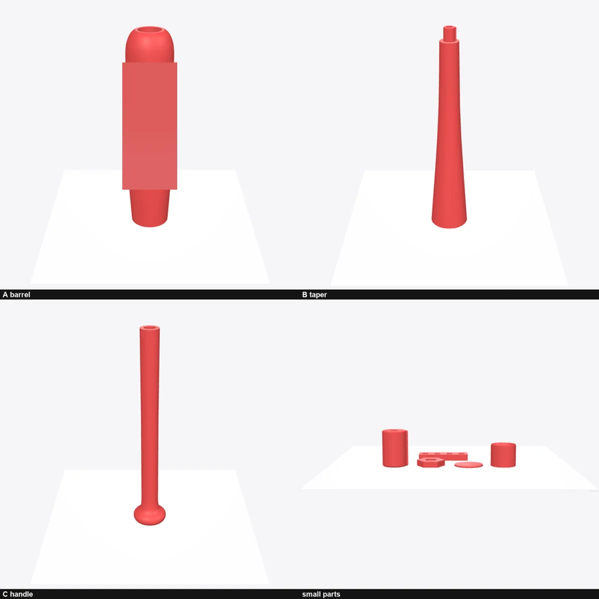
The first plate started at 04:10 on Monday morning, 12 October. The bed and nozzle took their time heating. Four minutes of printing later, at 04:21, Obico, the add-on that watches the printer's camera for failed prints and had once stopped the Panamera, stopped this one too. I looked, and cancelled it. The outer loop of the brim had run straight over the purge line at the front of the bed. Where the two crossed it was a smeared, crushed mess.
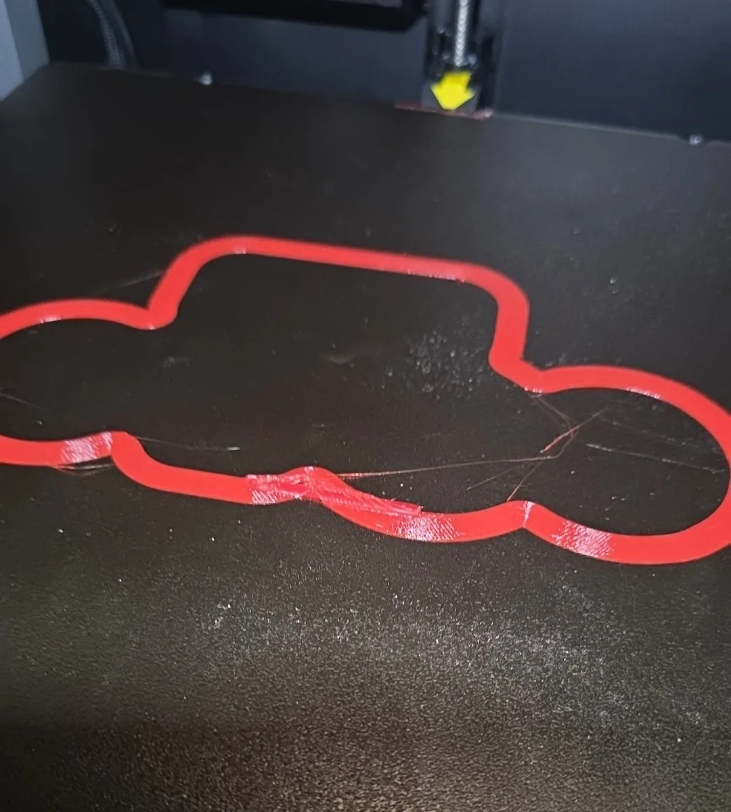
The file said the brim was 5 mm. The slicer's automatic brim had quietly grown it to about 18 mm. And the printer draws its purge line 10 mm in front of the part without looking at the brim at all. The handle and taper files had the same clash waiting.
The fix was to stop letting the slicer choose: a fixed 7 mm brim, outer edge only, on all three files. The check I run before every print now measures the gap between brim and purge line. At 04:36 the first plate started again.
97 %
The plate got to 97 %. Then the coupler came off its brim, and the last layers went into the air as strings. At 08:29 Obico saw the strings and paused the print.
08:06 · 87 %
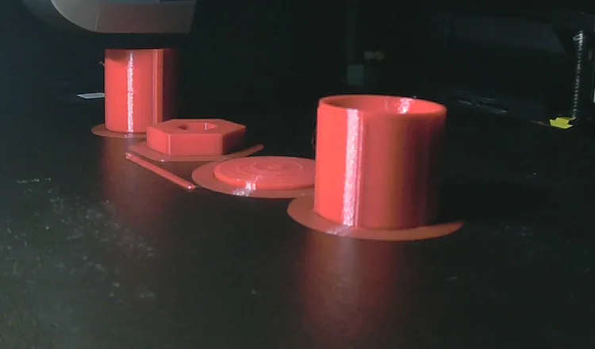
08:56 · stopped
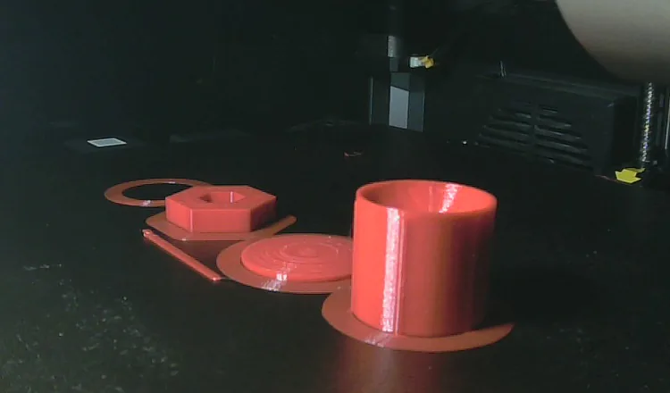
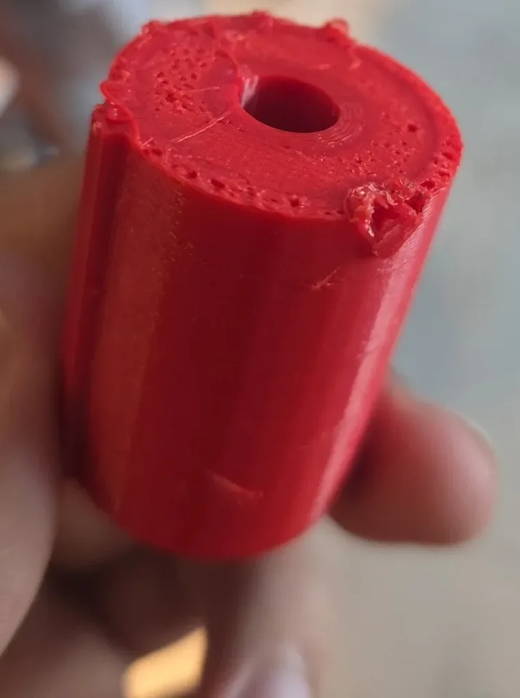
My new check measured the brim against the purge line, and nothing measured the brim against the part. The files left a gap of 0.25 mm between the two, so they never bonded. The handle and taper files were sliced again with the brim attached to the part.
The one good result of the morning had come at 07:45, with the plate still printing. On the test bar, the 8.1 mm hole was the snuggest, with the least movement. That's tighter than my 8.2 mm guess. The long pieces were redrawn with 8.1 mm rings before any of them printed.
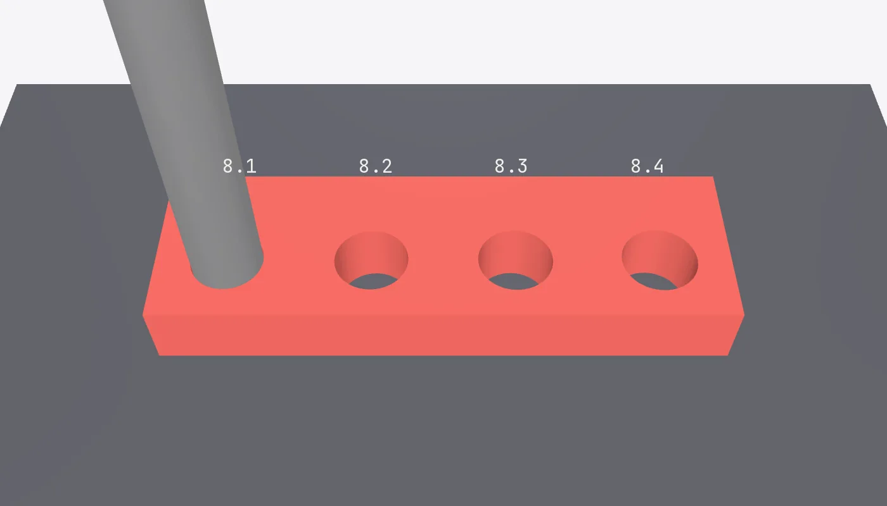
One ring
The handle printed clean, from 09:24 to 13:51 on Monday, with its brim joined to the part this time. The rod went all the way through its rings. The taper started at 21:58 the same evening.
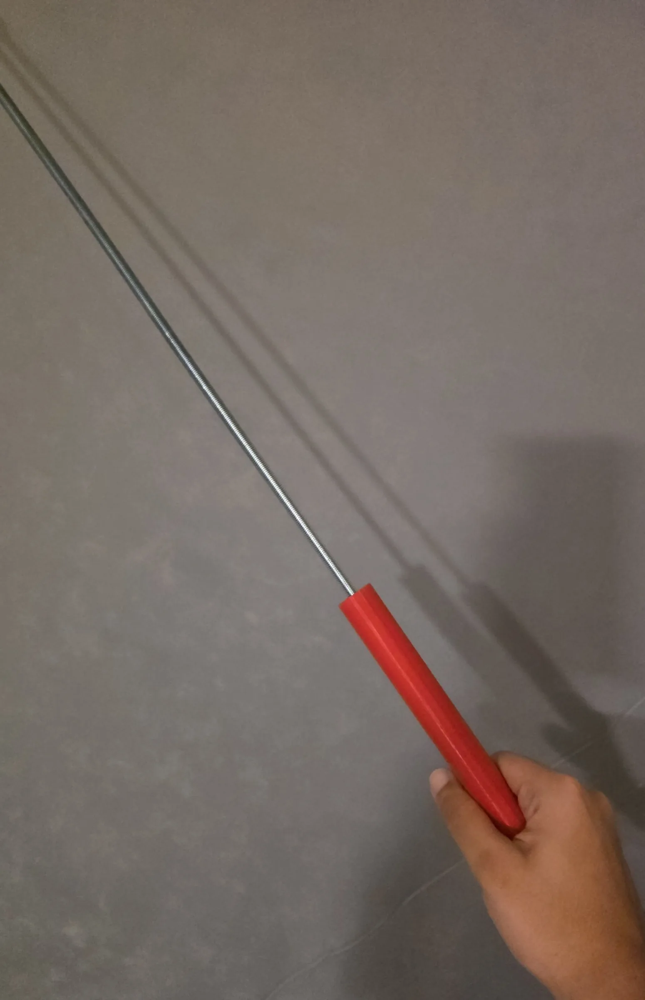
At about 02:55, at 96 %, the taper paused: the filament had stopped feeding. On the spool, the turns on one side had stuck to each other, and the extruder couldn't pull them free. The spool had spent the whole day in the filament dryer on its PETG setting, and that's what I blamed first. I cut off the stuck turns, reloaded, pressed resume, and the taper finished at 03:22.
It came off the bed with one flaw: a ring just below the spigot, where the last layers before the pause had been starved of plastic. A reprint would have cost 4 h 48 min and 152 g. Instead the ring gets covered. A bat has a grip, and the grip will run over that joint.
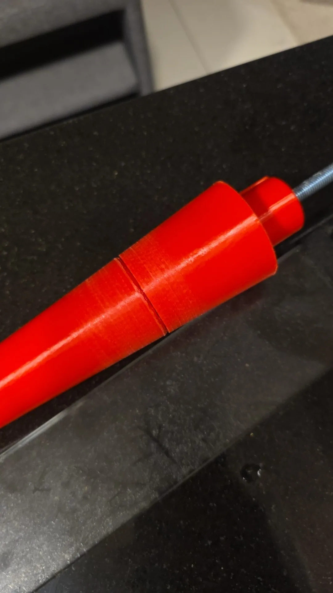
In the air
The barrel started at 03:37 on Tuesday morning, 8 h 33 min of printing as sliced. By 06:26 the first letter was rising out of the surface, crisp. At 08:29, the same minute as the day before, Obico paused the print.
The file was at 164.6 mm. A ruler along the barrel said about 144 mm, so it looked as if 20 mm of layers, about 100 of them, had gone nowhere: the same spool had jammed again and nothing had come out of the nozzle. The printer had carried on above the barrel, laying strings in the air.
08:48 · the strings
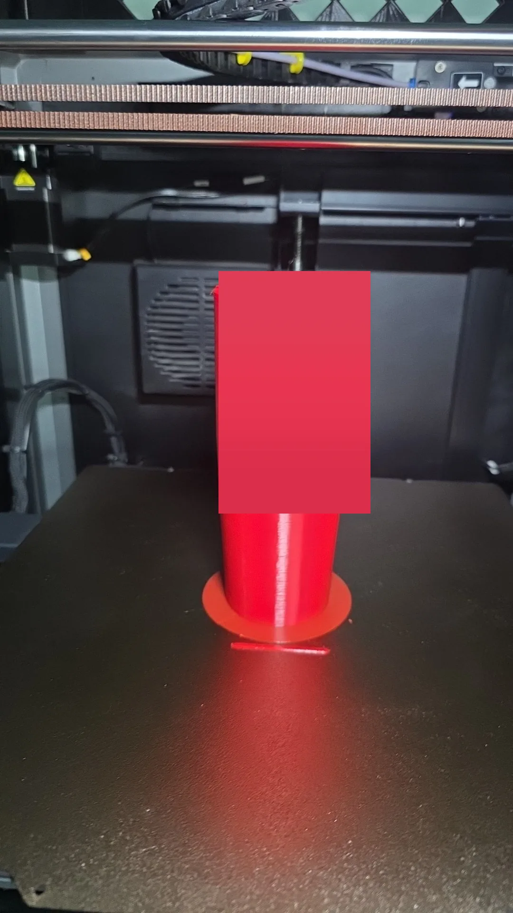
08:53 · the top
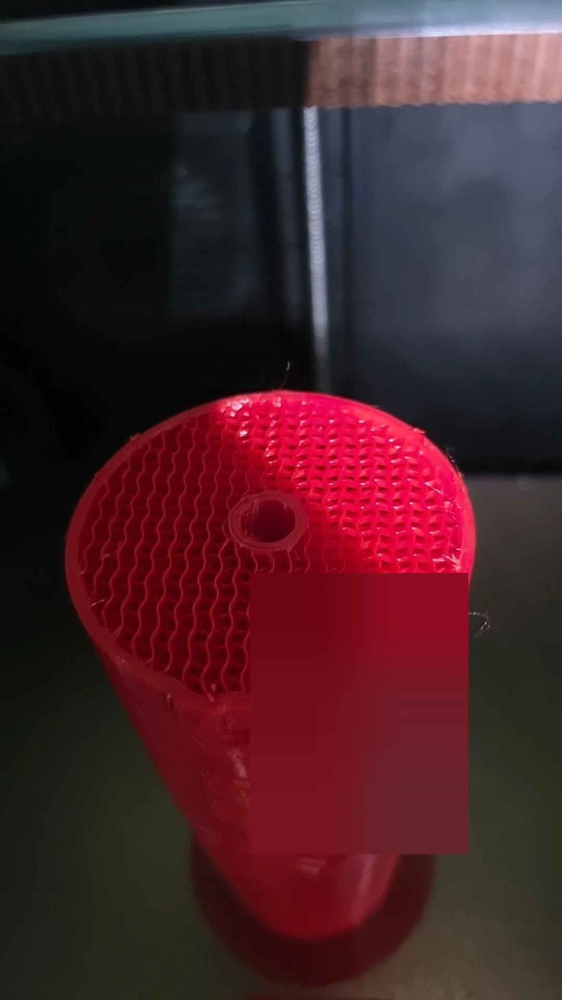
The top was flat and clean, so the print could continue from the real height. The plan was to let the printer measure it: bring the nozzle down over the wall in small steps with a sheet of paper on top, and stop at the first drag. I sent the nozzle to 146 mm, two above the ruler's 144, as the first step.
The barrel was 155 mm tall, not 144. The gap was 10 mm of strings, not 20, and the nozzle pressed into the top of it.
09:02 · the nozzle
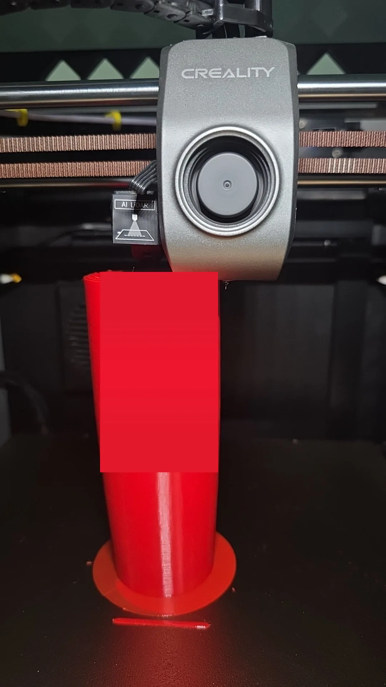
09:05 · the tape
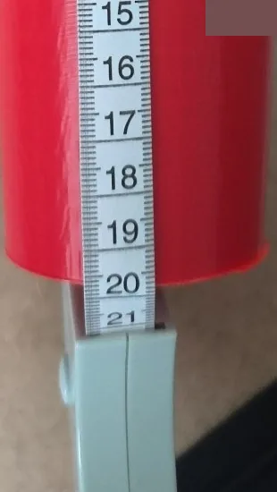
The barrel was still standing on its brim, but the print was over. A ruler reads to a millimetre on a good day, and I had used it to aim a hot nozzle. I cancelled the job at 09:05 and took the piece off.
A barrel in three
The barrel wasn't lost. Its bottom 155 mm were good, letters included. So the barrel model was cut at 154 mm and the top 128 mm became its own print, standing on its cut face. The bottom piece had to be sanded down to 154 mm so the letters would line up across the joint. The top started at 09:18.
At 11:14, 61 mm up, the runout sensor stopped it. The spool again. The reload wouldn't feed, and at 14:22 I cancelled that one too. The barrel was now going to be three pieces, and a joint would cross the name twice.
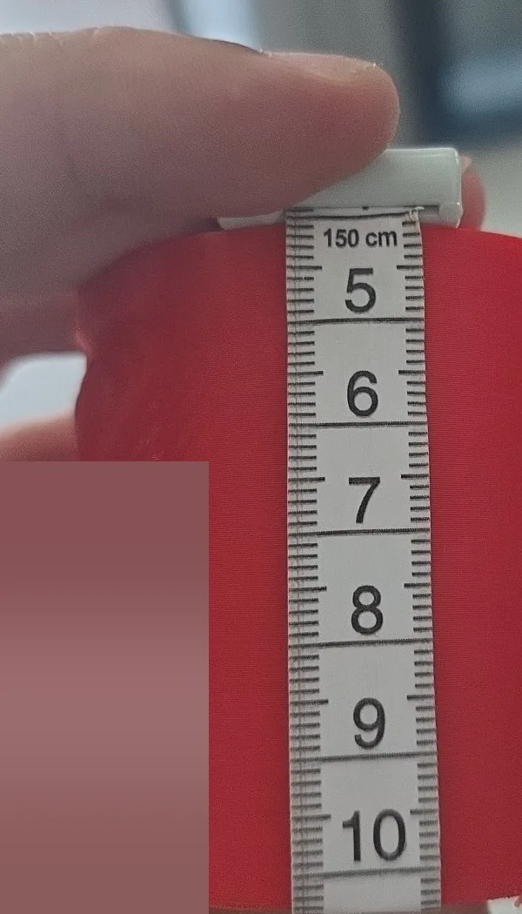
The model was cut again, at 60.6 mm, and a 67 mm top piece went to the printer. It started at 14:34 and stopped after 16 minutes. The spool. This time I pulled about 30 m off it by hand, in big loose loops on the floor, so the printer only had to pull from the pile. The piece started again at 15:13 and finished at 17:38, and the spool went in the bin with about 300 g still on it.
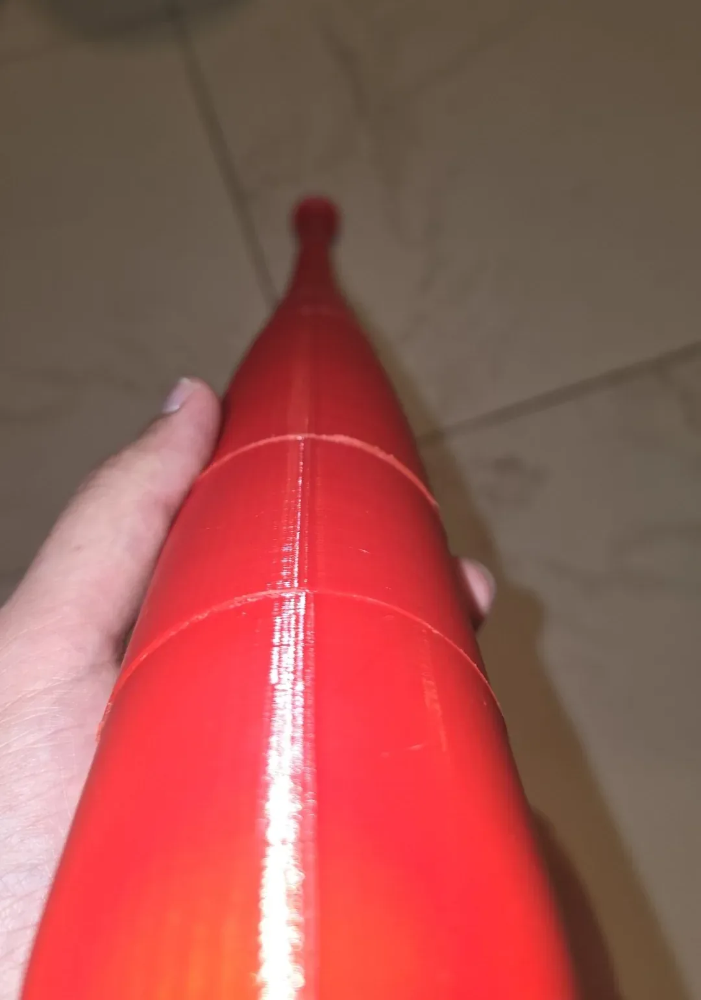
Glued
The plan had been to glue only the nut holder and the knob cap and let the two nuts clamp the rest. That evening I glued every joint with 5-minute clear epoxy, nuts and washers on, and called it a day. One thing looked wrong: the top seemed a bit high. The rod stood proud of the cup, and the plug, which should sit flush over the nut, had been glued in on top of it. Either the rod was cut a little long or it wasn't all the way down into the knob nut. I didn't find out which. By the time I noticed, the glue was hard.
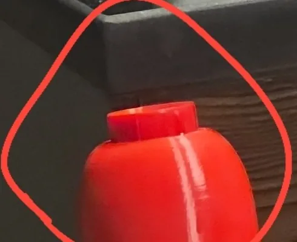
The next day I cut the stub off.
White
The letters were always going to be a second colour. Red on red reads only when the light catches the edges. So on Wednesday night the barrel got masking tape around the name, with a window cut out so the letters stood up out of it, and the letters got satin white from a can of paint-and-primer.
Tape masks a flat edge. It doesn't seal against the foot of a raised letter, so the white went under the tape and onto the red around every letter. Two specks landed on the back of the barrel, and a lighter rectangle marks where a strip of tape had sat.
One letter, close up
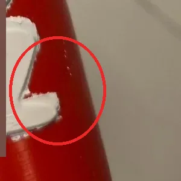
The back
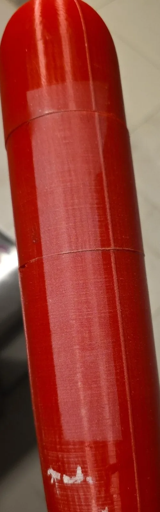
The paint needs a day to cure before it can be scraped, so the cleanup waits: a knife tip along the foot of each letter, then a flat blade across the red around it, pushing away from the letter. Cured paint flakes off smooth plastic.
What I check now
Before a long print, I spin the spool by hand. The runout sensor only notices when the strand stops moving. A spool that drags starves the print quietly, layer by layer, and that is how 10 mm of a barrel ended up printed in the air.
It stands in one piece, 84 cm, with a name down the barrel. Nobody has swung it yet.
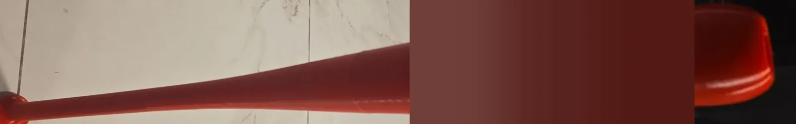
The short version
What went wrong, and what fixed it.
- No model online was a realistic life-size bat.Drew my own from a standard 33 inch profile.
- 84 cm doesn't fit a 30 cm printer, and two upright pieces made a kid's bat.Three upright pieces at full size.
- Upright layers are the weak direction for a bat.A steel M8 rod through the middle, clamped with a nut at each end.
- A bat that tightens by spinning would also loosen by spinning.Both joints keyed so nothing can turn.
- The brim grew onto the printer's purge line.A fixed 7 mm outer brim, and the print check now measures brim against purge.
- The brim sat 0.25 mm away from the parts, and at 97 % the coupler came loose.Handle and taper sliced again with the brim attached to the part. Both held to the bed.
- Nobody knew how tight an 8 mm rod hole prints in this PETG.A test bar with four holes. 8.1 mm won.
- The red spool's turns had stuck together. It starved the taper at 96 % and left a ring.Cut off the stuck turns, reloaded, resumed. The ring stays, under the grip.
- The same spool starved the barrel at about 155 mm, and the printer laid 10 mm of strings in the air.The missing top became its own piece.
- I sent the nozzle down to 146 mm over a barrel that was 155 mm tall.Measure from far above in small steps, or don't move the head at all.
- The spool stopped two more prints, at 61 mm and at 16 minutes.Pulled 30 m off by hand into loose loops. The barrel is three pieces on the rod.
- The rod stood proud of the cup, and the plug was glued over it.Cut the stub flush the next day.
- Masking tape doesn't seal against raised letters, so white landed on the red around them.Still to do: score each letter's edge and scrape the red clean.
Built on
Designs and ideas this one owes something to. Their files stay on their pages.
- Full size baseball batMIHAI_T · MakerWorld · Standard Digital File License85 cm with an M8 rod inside. The closest bat I found, and the rod idea I built on.
- Sedgwick Ave DisplayPedro Vergani, Kevin Burke · Google Fonts · SIL Open Font License 1.1The graffiti letters on the barrel.
How it was printed
- Printer
- Creality K1 Max, rooted, Klipper
- Slicer
- OrcaSlicer 2.4.2, profiles K1M 0.20 Standard for the long pieces and 0.12 Fine for the small parts
- Material
- PETG, red, 240 °C, bed 75 °C for the first layer then 72 °C
- Walls, infill
- 5 walls, gyroid: handle 40 %, taper 25 %, barrel 20 %
- Pieces
- Handle 286 mm, taper 272 mm plus an 18 mm spigot into the handle, barrel 282 mm, which ended up printed as three pieces of about 154, 61 and 67 mm, plus a coupler, a nut holder, a knob cap and a cup plug
- Rod rings
- 8.2 mm in the first files, 8.1 mm after the test bar
- Hardware
- M8 threaded rod, two M8 nuts, two 30 × 2 mm washers, 5-minute clear epoxy
- Paint
- Satin white paint-and-primer from a can, on the letters only, over masking tape
- Plan versus printer
- About 22 h and 651 g planned. The printer's history says 22 h 20 min and about 680 g over 8 jobs, 5 of them cancelled
Settings that mattered
The profile’s value, then what this print used.
- Brim auto changed to outer only, 7 mm
- First layer, small parts 0.12 changed to 0.24 mm
- Sparse infill, taper and barrel every layer changed to every 2nd layer
- Brim gap (brim_object_gap) 0.25 changed to 0 mm
All strength figures in this post are calculated, not tested. The bat's outline follows typical 33 inch bat charts, not a measured bat. Grams are what the printer's job history says it fed, cancelled jobs included.